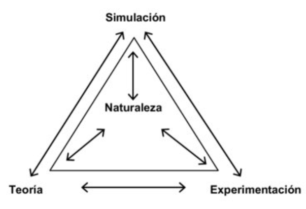

Simulación computacional como experimento in silico
Una introducción conceptual y práctica
Miguel Ponce de Leon miguel.ponce@bsc.es
2026-05-05
Motivación
La simulación permite experimentar con modelos del mundo.
¿Qué es una simulación?
Una simulación es una representación computacional de un sistema que evoluciona en el tiempo.
Permite:
- explorar dinámicas complejas
- evaluar escenarios
- probar hipótesis
Ejecutamos el modelo en lugar de observar el sistema real
¿Qué es un experimento in silico?
- Experimento realizado sobre un modelo computacional
- Se manipulan variables bajo condiciones controladas
- Se observan resultados como si fueran mediciones
Comparación:
- In vivo: en organismos vivos
- In vitro: en laboratorio
- In silico: en computadora
La simulación como tercer pilar
- Teoría → ecuaciones
- Experimento → observación
- Simulación → integración de ambos
Permite explorar sistemas donde teoría o experimento son insuficientes.
Más allá del binomio teoría-eperimento

Las simulaciones por computador supusieron un nuevo enfoque epistemológico
Componentes de un experimento in silico
- Modelo: representación matemática o lógica
- Parámetros: constantes ajustables
- Condiciones iniciales
- Intervenciones
- Observables
Analogía con laboratorio
| Reactivos |
Parámetros |
| Protocolo |
Algoritmo |
| Medición |
Salidas |
Tipos de simulación
Mecanicistas
- Basados en mecanismos conocidos
- Ej: ODEs, agentes
Basados en datos
- Machine learning
- Modelos sustitutos
Tipos de simulación (estructura)
Continuas
- ecuaciones diferenciales (ODEs, PDEs)
Discretas
Deterministas
Estocásticas
Determinista vs Estocástico
- Determinista: mismo input → mismo output
- Estocástico: incluye aleatoriedad
Importante para capturar variabilidad biológica
Caso de estudio: epidemias
- Modelos SIR
- Simulación de intervenciones
- Escenarios contrafactuales
Pregunta:
¿Qué hubiera pasado sin intervención?
Caso de estudio: biología de sistemas
- Redes regulatorias
- Modelos metabólicos
- Interacción entre niveles
Ejemplo — Epidemias
Podemos modelar:
- dinámica temporal (SIR)
- propagación espacial (metapoblación)
- comportamiento individual (ABM)
mismo fenómeno, distintos modelos
Representación computacional
Los modelos generan datos estructurados:
Ejemplo:
I(t, i) → infectados por región
estos datos son arrays multidimensionales
Una simulación como función
Un modelo puede verse como:
output = f(parámetros, condiciones iniciales)
ejecutamos f muchas veces
¿Por qué usar simulaciones?
- Explorar lo imposible
- Bajo costo
- Alta escalabilidad
- Reproducibilidad
Un experimento se convierte en miles.
Limitaciones
- Suposiciones del modelo
- Incertidumbre en parámetros
- Validación limitada
“Todos los modelos están equivocados, pero algunos son útiles”
Flujo de trabajo
- Definir pregunta
- Construir modelo
- Calibrar
- Validar
- Experimentar
- Analizar resultados
Proceso iterativo
Diseño de experimentos in silico
- Hipótesis claras
- Controles
- Reproducibilidad
- Exploración sistemática
Explorar:
- parámetros
- escenarios
- incertidumbre
Ejemplo conceptual
- Reducir tasa de infección
- Observar curva epidémica
Pregunta:
¿Cómo cambia el pico?
Coste computacional
Simular sistemas complejos:
- muchas variables
- muchos parámetros
- muchas ejecuciones
requiere computación eficiente
Reflexión
- ¿Aprendemos del modelo o del mundo?
- ¿Qué significa validar una simulación?
Conclusión
- La simulación es una herramienta científica clave
- Complementa teoría y experimento
- Requiere pensamiento crítico
Discusión
- Preguntas
- Ideas
- Aplicaciones en su área